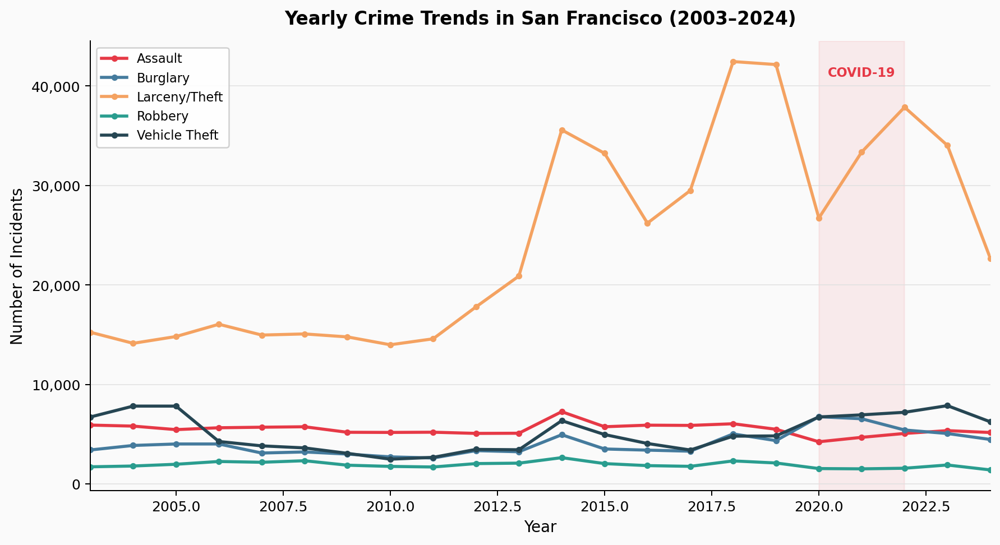

How two decades of San Francisco police data reveal a pandemic that didn't reduce crime, but reshuffled who became a target and where.
Every time someone in San Francisco calls 911, files a police report, or an officer responds to an incident, a record is created. The San Francisco Police Department publishes these records through the city's open data portal, making over 2.5 million incident reports from 2003 to 2024 available for public analysis. We merged the legacy dataset (2003–2017) with the current reporting system (2018–present) to build a continuous 21-year picture of crime in the city.
From dozens of categories in the raw data, we focus on five that matter most to residents and are consistently recorded across the entire period: Assault (physical attacks), Burglary (unlawful entry into buildings), Larceny/Theft (stealing property without force), Robbery (theft using force or threat), and Vehicle Theft. Together, these categories capture the "street-level" crime that shapes how safe a neighborhood feels.
A critical caveat: this data shows what was reported to police, not all crime that occurred. If a neighborhood distrusts law enforcement, crimes go unreported. If police prioritize certain offenses, others get undercounted. As Richardson et al. (2019) demonstrate in their influential paper on "dirty data," crime statistics reflect enforcement patterns as much as criminal behavior. A 30% drop in drug arrests might mean less drug activity, or it might simply mean officers were reassigned elsewhere. We'll return to this tension at the end.
With that caveat in mind, let's look at what the data reveals.
Before diving into the pandemic's effects, we need context. What did "normal" look like? The chart below traces annual incident counts from 2003 through 2024, covering two full decades that include the 2008 financial crisis, the tech boom of the 2010s, and the COVID-19 pandemic.

The most striking feature isn't a single spike or dip. It's the divergence. Larceny/Theft and Vehicle Theft move in opposite directions starting in 2020, like two lines on a graph repelling each other. This isn't coincidence. Larceny depends on crowded spaces: tourists with cameras, commuters with laptops, shoppers with bags. When the Bay Area issued its shelter-in-place order in March 2020, Union Square, the Financial District, and Fisherman's Wharf emptied overnight. Research on pandemic-era crime confirms this pattern: property crimes tied to commercial activity collapsed across major U.S. cities (Ashby, 2020).
Vehicle theft tells the inverse story. Cars that normally moved through the city sat parked for weeks. Streets that once had steady foot traffic became deserted, meaning fewer witnesses and more opportunity. The surge was amplified nationally by a viral social media trend known as the "Kia Boys", which spread techniques for stealing certain car models. By 2023, vehicle theft had reached levels not seen since the early 2000s, and unlike larceny, it hasn't come back down.
This divergence raises a natural question: if crime didn't disappear but moved, where exactly did it go?
Aggregate numbers tell us how much crime changed, but they hide where it moved. Burglary offers a revealing case study. The category saw a significant spike during COVID, but that spike wasn't uniform across the city. Use the layer controls on the map below to compare burglary hotspots before the pandemic (2017–2019) with the pandemic period (2020–2021).
The pattern aligns with criminological theory. Routine activity theory holds that crime occurs when three elements converge: a motivated offender, a suitable target, and the absence of a capable guardian (Cohen & Felson, 1979). The pandemic disrupted all three. Commercial districts lost their targets (closed businesses) but gained guardians (security, boards on windows). Residential areas gained targets (empty homes during the day as routines shifted) and lost guardians (neighbors working from home in their own units, not watching the street).
But San Francisco is not a monolith. The city's ten police districts experienced the pandemic very differently, and the recovery has been just as uneven.
San Francisco's ten police districts are not interchangeable. The Tenderloin is 0.35 square miles of dense urban core, while Taraval covers quiet residential blocks stretching to the Pacific. The Southern district includes the convention center and tech headquarters; Richmond is fog-bound single-family homes. Aggregating them into a single "San Francisco" number obscures as much as it reveals. The interactive chart below disaggregates the story.
The Southern district illustrates the foot-traffic thesis most clearly. This district includes the Moscone Convention Center, the Salesforce Tower, and the shopping corridors around Market Street. When daily commuters stopped arriving in March 2020, Larceny/Theft fell off a cliff. By 2023, as return-to-office policies took hold, the numbers climbed back, though not quite to pre-pandemic levels, reflecting the new hybrid work reality.
Tenderloin tells a darker story. This small, dense neighborhood has long struggled with concentrated poverty, homelessness, and open-air drug markets. The fentanyl crisis hit the Tenderloin particularly hard in recent years. Assault has risen steadily across all three periods: pre-COVID, during COVID, and post-COVID. This isn't a pandemic artifact; it's a persistent neighborhood crisis that city policies have struggled to address for decades. The data here should prompt humility. Not every pattern in the numbers can be explained by COVID, and not every trend will reverse when the pandemic "ends."
It's tempting to rank districts by incident counts and declare winners and losers. Resist the temptation. A high count in Southern reflects the millions of visitors passing through, not the safety of its residents. Comparing raw numbers across districts of different sizes, populations, and functions is comparing apples to orangutans.
So what can we actually conclude from all of this?
We've traced a clear narrative through 21 years of San Francisco police data: the pandemic didn't suppress crime so much as redirect it. Opportunities shifted from crowded commercial zones to quiet residential streets, from pedestrians with valuables to parked cars left unattended. The geographic center of gravity for burglary drifted westward. The composition of crime changed even when the totals didn't.
But we must be honest about what this data cannot prove. Police incident reports measure recorded crime, not actual crime. During 2020, SFPD staffing dropped, response times increased, and reporting priorities evolved. If fewer officers are on patrol, fewer incidents get documented, regardless of whether fewer crimes occur. Similarly, the post-2022 uptick in some categories coincides with a return to pre-pandemic policing levels. Disentangling "more crime" from "more recording of crime" is notoriously difficult.
Consider a practical example: if someone showed you Figure 1 and claimed "San Francisco got safer during COVID," would the data support that? Partially, since some categories did fall. But vehicle theft surged, burglary migrated to new victims, and the drop in larceny likely reflects the absence of targets rather than the absence of motivated offenders. The data supports a nuanced conclusion: the pandemic reshuffled risk, creating winners and losers depending on where you lived and what you owned.
If a policymaker used this analysis to argue for more patrols in residential neighborhoods, the data would offer suggestive support but not proof. We've shown that burglaries shifted to the Sunset and Richmond; we haven't shown that more police presence would have prevented them. Correlation is not causation, and historical data is not a controlled experiment.
What we can say is this: San Francisco's crime landscape in 2024 looks meaningfully different than it did in 2019. Vehicle theft remains elevated. Larceny has rebounded but redistributed. Assault in the Tenderloin continues a decade-long climb. The simple narratives, "crime is up" or "crime is down," miss the texture. The real story is always local, always categorical, and always more complicated than a headline.